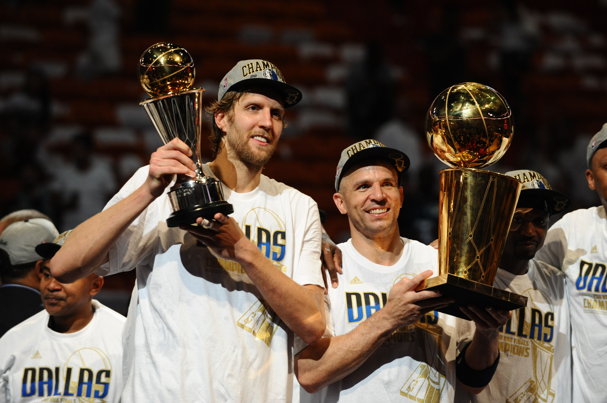

Dirk Nowitzki
The greatest athlete in Dallas's history

Dirk Nowitzki holding the Bill Russel NBA Finals MVP trophy after
leading the Dallas Mavericks to a championship in 2011
Facts about Dirk Nowitzki
-
Dirk Werner Nowitzki was born on June 19, 1978 in Würzburg, Germany.
-
Dirk was subjected to an unorthodox training regimen in his youth:
including learning to play an instrument as well as reading
literature.
-
Dirk was the 9th overall pick in the 1st round of the 1998 NBA
draft.
-
Dirk played every year of his career for the Mavericks, often taking
large pay cuts in order to be able to allow the team to afford
better players
-
Dirk was the 2007 league MVP, 2011 Finals MVP, and a 2011 NBA
Champion.